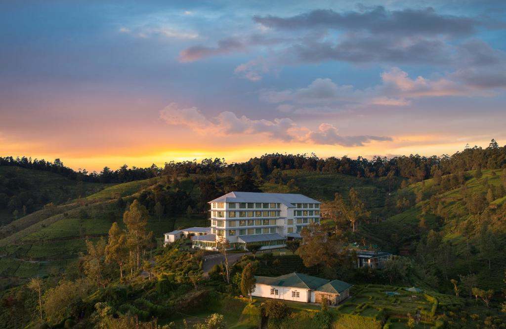
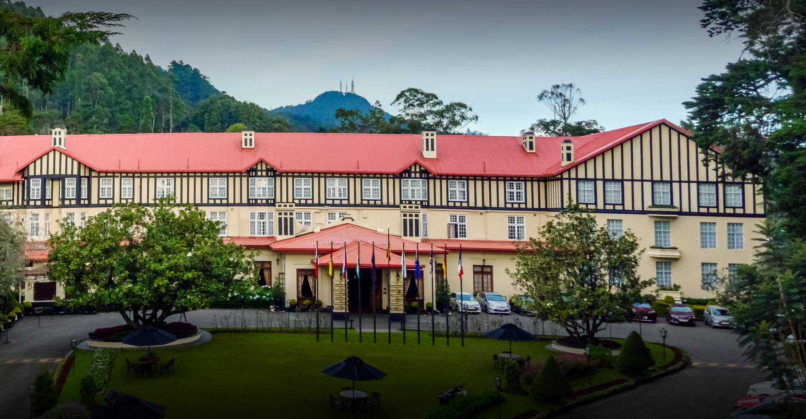

PLACES TO STAY
Luxury & Comfortable Stays
Handpicked properties offering the finest sleep and highland views in Nuwara Eliya.

Luxury
Heritance Tea Factory
📍 Kandapola, Nuwara Eliya
$310 / night
✓ Available
🍃 Spa
🌄 Tea Views
🔥 Fireplace
🍽 Restaurant
Book Now

Popular
Grand Hotel Nuwara Eliya
📍 Nuwara Eliya Town
$85 / night
✓ Available
🌿 Gardens
🍳 Breakfast
🏛 Colonial
Book Now

Best Value
Araliya Green Hills Hotel
📍 Nuwara Eliya Heights
$175 / night
⚡ 2 left
🏊 Heated Pool
🍸 Bar
🌄 Hill View
Book Now